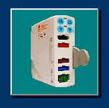

Equipment Management - The Forms¶
Overview - What Asset Manager Does¶
Asset Manager was developed to manage information on assetted devices in the Operating Theatres and post-op recovery.
Devices are entered into Asset Manager when they first arrive in the department.
- Note:
- It is important to confirm the device has been assetted by Materiel Management and tested and tagged by BTS prior to putting the device into service. If a yellow bar-code sticker is missing or the device has no SAID number affixed to it, it is likely that the device has not been assetted.
Asset Manager was designed to provide a means to manage non-consumables - those devices identified with yellow or white bar-code stickers. These non-consumables are termed “Devices” in Asset Manager. Devices should have been assigned a yellow (or sometimes white) bar-code sticker by the Materiel Management Department, although those stickers sometimes go walkabout. In addition to a bar-code, the sticker also displays an 8-digit number: the SAID number.
These numbers identify devices in Asset Manager, as SAID numbers are unique for each device. When conducting a search for a specific device in Asset Manager, use this number.
When a new device arrives, an envelope containing device information should accompany the device, containing crucial information for identification and trouble-shooting purposes. It is strongly suggested to take the time to enter key information such as model and serial number into Asset Manager as that information will help identify devices further down their service life. Device-specific information such as name, model number and serial number need to be recorded on the DevData worksheet.
To enter the device into Asset Manageris a simple process: conduct a search for the device by SAID by entering the SAID into the search field and pressing <ENTER>. As a new device will have an SAID that does not exist in DEVDATA, the user simply follows the prompts to enter device information and save the information into a new record.
The Main Equipment Form¶
The main form in Asset Manager is launched via the large button on the “Top” sheet.
The main Asset Manager form…
has six basic areas:
The Edit Equipment Form¶
This form is launched by the main form when adding new equipment to the DevData sheet or editing existing equipment information on the DevData and EventData sheets. It can be launched from two buttons - to either add or edit a device - from the Button Bar or from the “Manage Devices” section of The Menu.
The Edit Equipment form has five basic areas: